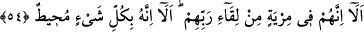

Buna göre taayyün mertebesi, evvelâ zâtî, ikinci olarak sıfâtî, üçüncü olarak ef’âlî
olmak üzere tevhid mertebesidir. Lâ-taayyün mertebesi ise mutlak olarak taayyün
mertebesinden üstün olup tecrid mertebesidir. Taayyün ile lâ-taayyün arasını cem edici
mertebe ise tefrid mertebesidir. Çünkü ilk birinci olan ferd-i hakîkî, mutlak olarak
tevhid, tecrid ve tefrid mertebelerini câmidir. Bütün ilimler, ameller cemâlî ve celâlî
eserler, evvelâ zâtın gaybında gizli olan birtakım zâtî hallerdir. İkinci olarak da ilim
arsasında sâbit olan birtakım sûretler ve ilmi sâbit zâtlardır. Yine bunlar ayn arasında
mevcud olan birtakım aynî hakîkatlerdir. İşte bu aynî tahakkuk ve hâricî varlıktan dolayı
Allah Teâlâ canları ve ufukları, gökleri, yerleri, yüce meclisi ve aşağı meclisi
yaratmıştır.
Böylece mâlûm olup bilinen hakîkat, görülüp müşâhede edilsin, cemâlî, celâlî ve
kemâlî emr-i ilâhî tamam olsun. Aynî ve hâricî varlıkla mutlak olarak Allah’ın ezelî ve
ebedî hükmü ayân beyân tamam olur.
“Nihâyetsiz olan denizin dalgasını sahrâ üzerine koydu, gizli hazine âşikâr oldu, gizli
zâhir oldu.”
“Rabbinin her şeye şâhid olması yetmez mi?” Münkirlerin Kur’ân hakkındaki
tereddüd ve inadlarından dolayı sitem için böyle bir soru yöneltilmiştir. Öyle ki bu
tereddüd ve inad birtakım âyetlerin gösterilmesini zarûrî kılıp Allah’ın verdiği haberle
yetinmemelerini gerekli kılmıştır.
Burada “hemze” inkâr için olup “vav”, makamın gerektirdiği mukadder bir ibâreye
atıf içindir. “Bâ” ise tekîd için zâid olarak gelmiştir. “Rabbin ihtiyaçsız bırakan ve
yeterli olan değil midir?” demektir.
“Allah her şeye şâhiddir”. Bu ifâde, bir önceki cümleden bedeldir. Yani Kur’ân’ın
gerçekliğini beyân için vaad edilen âyetleri göstermekten onları müstağnî kılıp Allah’ın
her şeye şâhid olması yetmedi mi? Hâlbuki Allah Kur’ân’ın kendi nezdinden
indirildiğini haber vermiştir. Dolayısıyla Allah’ın her şeye şâhid olmasının yeterli
olmaması mü’minlere değil münkirlere nisbetle dikkate alınması gereken bir durumdur.
54. Dikkat edin; onlar, Rablerine kavuşma konusunda şüphe içindedirler. Bilesiniz
ki O, her şeyi (ilmiyle) kuşatmıştır.
“İyi bil ki onlar” Mekke müşrikleri, diriliş ve cezâ ile “Rablerine kavuşmaktan”
büyük bir “kuşku” ve derin bir şüphe “içindedirler. İyi bil ki O, her şeyi kuşatmıştır.”
Allah her şeyi özet ve detaylı olarak bilir. Her şey Allah’ın bilgisi içindedir.
Bu inkârcılar uzuvları paramparça olup cüzleri darmadağın olduktan sonra ölülerin
tekrar diriltilmesini uzak ve imkânsız gördüler. Bu âyette şu ifâde edilmiştir ki zarfın
mazrûfunu, bir kabın içindekini kuşatması gibi kuşku ve şüphe de bu inkârcıları her